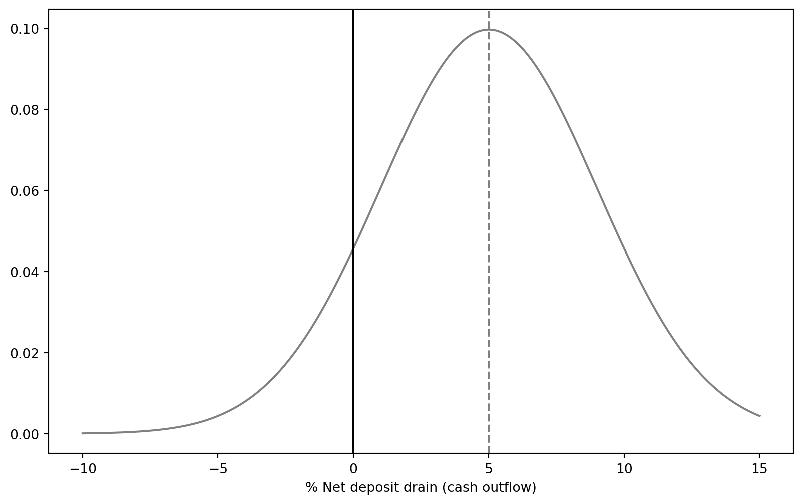
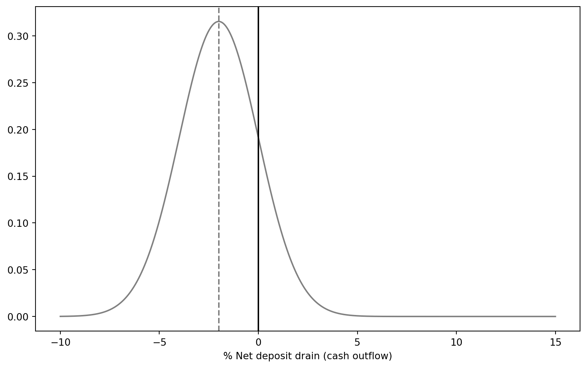

Liquidity risk is a normal aspect of everyday management of a financial institution (FI).
Depository institutions (DIs) are more exposed to liquidity risk than others
In extreme cases liquidity risk can threaten the solvency of an FI
The Global Financial Crisis commencing in 2008 was, in part, due to liquidity risk
Liquidity risk may result from asset side or liability side
We focus on the risk exposure of DIs.
Causes of liquidity risk
Liquidity risk can arise on both sides of the balance sheet: the asset side as well as the liability side
Liability side
Depositors and other claim holders decide to cash in their financial claims immediately
The DI has to borrow additional funds or sell assets
DI need to be able to predict the distribution of net deposit drains
The difference between deposit withdrawals and deposit additions on any specific normal banking day
Asset side
Risk from OBS loan commitments and other credit lines
Change of the value of investment securities portfolios due to unexpected changes of interest rates
Problems associated with ‘quick’ asset sales/fire-sales
High costs for turning illiquid assets into cash
Low sales price; in worst case, fire-sale price
Liquidity risk at depository institutions
Liability-side liquidity risk
A DI’s balance sheet typically features a large amount of short-term liabilities funding relatively long-term assets.
Short-term liabilities: demand deposits, other transaction accounts, etc.
Long-term assets: mortgages, C&I loans, etc.
Demand deposit accounts, money market deposit accounts (MMDAs), and other transaction accounts allow holders to demand immediate repayment of the face value in cash.
For example, a DI with 20% of its liabilities in demand deposits, MMDAs, and other transaction accounts must be ready to liquidate assets to cover that amount on any banking day.
Note
As of June 2021, U.S. commercial banks had total deposits representing 82.19% of total liabilities and capital.
Cash assets accounted for only 15.45% of total assets.
Liability-side liquidity risk (cont’d)
For CBA, cash and liquid assets account for 9.3% of total assets.
Figure 1: Excerpt of CBA’s 2023 balance sheet - assets
Liability-side liquidity risk (cont’d)
For CBA, deposits and other public borrowings account for 73.25% of total liabilities.
Figure 2: Excerpt of CBA’s 2023 balance sheet - liabilities
Liability-side liquidity risk (cont’d)
It’s not that bad.
Normally, only a small proportion of its deposits will be withdrawn on any given day.
Further, deposit withdrawals may in part be offset by the inflow of new deposits1 (and the DI’s income).
Most demand deposits are relatively “stable”, acting as consumer core deposits on a daily basis.
Core deposits are those deposits that provide a DI with a long-term funding source.
The DI manager must monitor and predict the net deposit drains on any given normal banking day.
Beyond predictable daily seasonality in deposit flows, other seasonal variations exist.
Many of these seasonal variations are somewhat predictable.
Retail DIs often experience above-average deposit outflows around the end of the year and in the summer (due to Christmas and the vacation season).
Rural DIs may experience a deposit inflow–outflow cycle aligned with the local agricultural cycle.
During the planting and growing season, deposits tend to fall.
During the harvest season, deposits tend to rise as crops are sold.
Net deposit drains
Code
import matplotlib.pyplot as pltimport numpy as np# Data for the plotx = np.linspace(-10, 15, 1000)y = np.exp(-0.5* ((x -5) /4)**2) / (4* np.sqrt(2* np.pi))# Plottingplt.figure(figsize=(10, 6))plt.plot(x, y, color='gray')# Adding vertical lines for 0 and 5%plt.axvline(x=0, color='black', linestyle='-', label='0')plt.axvline(x=5, color='gray', linestyle='--', label='5%')# Show x-axisplt.xlabel("% Net deposit drain (cash outflow)")# Show the plotplt.show()

Figure 3: A hypothetical distribution of net deposit drains
Consider a probability distribution of net deposit drains that is assumed to be strongly peaked at the 5 percent net deposit withdrawal level, as shown in Figure 3.
This DI expects approximately 5 percent of its net deposit funds to be withdrawn on any given day with the highest probability.
A positive net drain on deposits, so its new deposit funds and other cash flows are expected to be insufficient to offset deposit withdrawals.
As a result, the liability side of the DI’s balance sheet is contracting.
Net deposit drains (cont’d)
Code
import matplotlib.pyplot as pltimport numpy as np# Data for the plotx = np.linspace(-10, 15, 1000)y = np.exp(-0.5* ((x +2) /2 )**2) / (4* np.sqrt(2*0.1* np.pi))# Plottingplt.figure(figsize=(10, 6))plt.plot(x, y, color='gray')# Adding vertical lines for 0 and 5%plt.axvline(x=0, color='black', linestyle='-', label='0')plt.axvline(x=-2, color='gray', linestyle='--', label='-2%')# Show x-axisplt.xlabel("% Net deposit drain (cash outflow)")# Show the plotplt.show()

Figure 4: Another hypothetical distribution of net deposit drains
Consider another probability distribution of net deposit drains that is assumed to be strongly peaked at the -2 percent net deposit withdrawal level, as shown in Figure 4.
A negative net drain on deposits, so its new deposit funds and other cash flows are expected to be larger than deposit withdrawals.
As a result, this DI is expected to grow with an expanding balance sheet.
Managing net deposit drains
Generally a drain on deposits at DIs can be managed by
purchased liquidity management
stored liquidity management
Traditionally, DIs have relied on stored liquidity management. Today, most DIs rely on purchased liquidity management.
Note
We will discuss in greater detail liquidity management in next week.
Purchased liquidity management
A DI manager seeking to purchase liquidity turns to markets for purchased funds.
Options include the cash market and the repurchase agreement markets, which are interbank markets for short-term loans.
Alternatively, the DI manager could:
Issue additional wholesale certificates of deposit.
Sell notes and bonds.
Borrowed funds (at market rates) are likely to be at higher rates than interest paid on deposits.
Purchased liquidity management (cont’d)
Panel A: Balance sheet immediately before and after deposit drain
Assets
Deposits
Borrowed funds
Other liabilities
Total Liabilities
Before the drain
100
70
10
20
100
After the drain
100
65
10
20
95
Panel B: Adjusting to a deposit drain through purchased liquidity management
Assets
Deposits
Borrowed funds
Other liabilities
Total Liabilities
After liquidity management
100
65
15
20
100
Purchased liquidity management allows DIs to maintain their overall balance sheet size
A liability-side adjustment to the balance sheet to cover a deposit drain
Stored liquidity management
A DI manager could also liquidate some of its assets, utilizing its stored liquidity.
Traditionally, U.S. DIs hold cash reserves at the Federal Reserve and in their vaults to meet liquidity needs.
The Federal Reserve sets minimum reserve requirements for banks’ cash reserves.
Despite these requirements, DIs often hold cash reserves above the minimum to manage liquidity drains.
Note
In U.S., the Fed reduced the reserve requirement to 0, effective March 26, 2020.
In Australia, the RBA does not impose formal reserve requirements.
Stored liquidity management (cont’d)
Panel A: Balance sheet immediately before deposit drain
Assets
Liabilities
Cash
9
Deposits
70
Borrowed funds
10
Other asset
91
Other liabilities
20
Total
100
Total
100
Panel B: Adjusting to a deposit drain through stored liquidity management
Assets
Liabilities
Cash
4
Deposits
65
Borrowed funds
10
Other assets
91
Other liabilities
20
Total
95
Total
95
Size of balance sheet decreases
DIs tend to prudently hold low-rate excess reserve assets to meet liquidity drains
Asset-side liquidity risk
This far we have discussed the liability-side liquidity risk due to net deposit drains.
On the asset side, liquidity problems can arise due to
loan requests
the exercise by borrowers of their loan commitments and other credit lines! (e.g., at the onset of COVID-19)
Balance Sheet Immediately Before and After Exercise
Before Exercise
Amount
Amount
Cash
12
Deposits
100
Other assets
138
Borrowed funds
20
Other liabilities
5
Equity
25
Total
150
Total
150
After Exercise
Amount
Amount
Cash
12
Deposits
100
Other assets
143
Borrowed funds
20
Other liabilities
5
Equity
25
Total
155
Total
150
Adjusting the Balance Sheet to a Loan Commitment Exercise
Purchased Liquidity Management
Amount
Amount
Cash
12
Deposits
100
Other assets
143
Borrowed funds
25
Other liabilities
5
Other liabilities
5
Equity
25
Total
155
Total
155
Stored Liquidity Management
Amount
Amount
Cash
7
Deposits
100
Other assets
143
Borrowed funds
20
Other liabilities
5
Equity
25
Total
150
Total
150
Asset-side liquidity risk (investment portfolio)
Another type of asset-side liquidity risk arises from the investment portfolio.
Rising interest rates reduce the value of investment portfolios.
Liquidity in a particular market could deteriorate because no one wants to buy.
Technological development is claimed to have improved the liquidity of financial markets. But given the herding hebaviour in the market, liquidity could still dry up and investment securities only sold at fire-sale prices.
The FI must fund the loss in value on the balance sheet such that loan requests and deposit withdrawals can be met.
The result is increased liquidity risk for the FI.
Comparison of certain key ratios and balance sheet features of the DI with similar DIs, for example,
Loans to deposits
Loans to assets
Core deposits to total assets
(Unused) loan commitments to assets
Measuring a DI’s liquidity risk exposure (cont’d)
Liquidity index
Developed by Jim Pierce at the Federal Reserve, liquidity index measures the potential losses an FI could suffer from a sudden or fire-sale disposal of assets compared with the amount it would receive at a fair market value established under normal market (sale) conditions.
\[
I = \sum_{i=1}^N \left(W_i \times \frac{P_i}{P^*_i}\right)
\]
where
\(W_i\) is the percentage of each asset in the FI’s portfolio
\(P_i\) is the immediate sale price
\(P^*_i\) is the fair market price
The liquidity index should lie between 0 and 1.
Liquidity risk measures
During the financial crisis, many DIs struggled to maintain adequate liquidity.
Central banks had to provide extraordinary levels of liquidity assistance to sustain the financial system.
Despite this support, some DIs failed or were forced into mergers.
In response, the BIS’s Basel Committee on Banking Supervision introduced two new regulatory standards for liquidity risk supervision:
Liquidity Coverage Ratio (LCR):
Came into effect on January 1, 2015.
Gradually implemented, reaching full compliance on January 1, 2019.
Net Stable Funding Ratio (NSFR):
Became a minimum standard on January 1, 2018.
These rules apply to:
Large, internationally active banking organizations with $250 billion or more in total consolidated assets.
Organizations with $10 billion or more in total on-balance-sheet foreign exposure.
Consolidated subsidiary depository institutions with $10 billion or more in total assets.
Liquidity Coverage Ratio (LCR)
The Liquidity Coverage Ratio (LCR) is designed to ensure that a DI maintains sufficient high-quality liquid assets (HQLA).
These HQLA must be easily convertible to cash to meet liquidity needs over a 30-day period.
The LCR is based on an “acute liquidity stress scenario” defined by supervisors.
The scenario includes both institution-specific and systemic shocks.
It reflects actual conditions experienced during the global financial crisis.
The purpose of maintaining the LCR is to ensure that DIs can survive severe liquidity stress for at least 30 days.
The LCR is reported to DI supervisors on a monthly basis.
\[
\text{Minimum LCR} = \frac{\text{Stock of HQLAs}}{\text{Total net cash outflows over next 30 calendar days}} \ge 100\%
\]
Liquidity Coverage Ratio (LCR) (cont’d)
The stock of HQLAs is defined as follows:
Liquid assets in the stock must remain liquid in times of stress (i.e., convertible into cash at little loss of value and can be used at the central bank discount window as collateral).
Liquid assets in the stock must be “unencumbered”, i.e., free of legal, regulatory, contractual, or other restrictions on the ability of the bank to liquidate, sell, transfer, or assign the asset.
Liquid assets in the stock are divided into level 1 and level 2. Level 1 amount has no cap, and level 2 amount is capped at 40 percent of the stock.
Level 1 assets are limited to:
Cash, central bank reserves, marketable securities representing claims on or guaranteed by sovereigns, central banks, public sector entities (PSE), and some supranational institutions (e.g., BIS, IMF, ECB, multilateral development banks).1
Level 2A assets (15% haircut):
Eligible marketable securities representing claims on or guaranteed by sovereigns, central banks, PSEs, or multilateral development banks.
Eligible corporate debt securities and covered bonds.
Eligible corporate debt securities and equities (50% haircut).
Liquidity Coverage Ratio (LCR) (cont’d)
The total net cash outflows is defined as:
\[
\text{Total net cash outflows over next 30 calendar days} = Out - \min(In, 75\% \times Out)
\]
where
\(Out\) is total expected cash outflows
\(In\) is total expected cash inflows
Cash inflows and outflows are computed based on the type of assets/liabilities and associated draw-down factors.
Note
For a detailed calculation of cash outflows and inflows, refer to textbook Saunders, Cornett, and Erhemjamts (2023) or to the suggested readings.
Liquidity Coverage Ratio (LCR): example
Consider the following balance sheet (in million of dollars) of a bank. Calculate the bank’s LCR.
Assume that the cash inflows over the next 30 days from the bank’s assets are $5 million.
Assets
$
Liquidity Level
Liabilities and Equity
$
Run-Off Factor
Cash
5
Level 1
Stable retail deposits
95
3%
Deposits at the Fed
15
Level 1
Less Stable retail deposits
40
10
Treasury securities
100
Level 1
Unsecured wholesale funding from:
GNMA securities
75
Level 2A
- Stable small business deposits
100
5
Loans to A-rated corporations
110
Level 2A
- Less Stable small business deposits
80
10
Loans to B-rated corporations
85
Level 2B
- Nonfinancial corporates
50
75
Premises
20
Equity
45
Total
410
Total
410
Liquidity Coverage Ratio (LCR): example (cont’d)
The LCR is calculated as follows:
First, calculate the amount of HQLA.
Level 1 assets is \(5+15+100=120\) million
Before adjustment for capps,
Level 2A assets is \((75+110)\times (1-15\%) = 157.25\) million1
Level 2B assets is \(85\times (1-50\%)=42.5\) million2
However, Level 2 assets is capped at 40% of HQLA!
Given that Level 1 assets is 120 million, which should account for at least \(1-40\%=60\%\) of HQLA.
HQLA should be \(120/(1-40\%) = 200\) million, which means a maximum of \(200-120=80\) million Level 2 assets.
The Level 2 assets after haircut is larger than the cap - they will not further increase HQLA.
Therefore, the HQLA is 200 million.
Liquidity Coverage Ratio (LCR): example (cont’d)
Next, calculate the total net cash outflows over next 30 days.
Cash outflows are:
Stable retail deposits: \(95\times 0.03 = 2.85\)
Less stable retail deposits: \(40\times 0.1 = 4\)
Stable small business deposits: \(100\times 0.05 = 5\)
Less stable small business deposits: \(80\times 0.1 =8\)
Nonfinancial corporates: \(50\times 0.75 = 37.5\)
Therefore,
Total cash outflows over next 30 days is 57.35 million.
Total cash inflows over next 30 days is 5 million (assumed).
Total net cash outflows over next 30 days is 52.35 million.
Lastly, calculate LCR:
\[
\text{LCR} = \frac{\text{Stock of HQLAs}}{\text{Total net cash outflows over next 30 calendar days}} = \frac{200}{52.35} = 382.04\% \ge 100\%
\]
Net Stable Funding Ratio (NSFR)
The Net Stable Funding Ratio (NSFR) focuses on long-term liquidity management on a DI’s balance sheet.
It evaluates liquidity across the entire balance sheet, encouraging the use of stable sources of financing.
The NSFR requires a minimum amount of stable funding over a one-year time horizon.
It aims to limit the reliance on short-term wholesale funding, a significant issue during the financial crisis.
The NSFR has been reported to DI supervisors quarterly since 2018.
\[
\text{NSFR} = \frac{\text{Available amount of stable funding}}{\text{Required amount of stable funding}} \ge 100\%
\]
Net Stable Funding Ratio (NSFR)
Available stable funding (ASF) includes:
Bank capital
Preferred stock with a maturity > 1 year
Liabilities with maturities > 1 year
The portion of retail deposits and wholesale deposit expected to stay with bank during a period of idiosyncratic stress
These equity and liabilities are assigned to one of five categories, each with a specific ASF factor.
ASF is calculated as the sum of the weighted amounts.
Net Stable Funding Ratio (NSFR)
Required stable funding (RSF) is calculated as the sum of
the value of the on-balance-sheet assets multiplied by a specific RSF factor assigned to each particular asset type, and
the amount of off-balance-sheet (OBS) activities (or potential liquidity exposure) multiplied by the associated RSF factor.
Liquidity risk of Australian banks (FY2023)
CBA
NAB
ANZ
Westpac
Cash Outflows
Retail And Counterparties Deposits Outflow
37,416
29,947
25,517
29,304
Stable Deposits
12,700
5,843
5,879
7,969
Less Stable Deposits
24,716
24,104
19,638
21,335
Unsecured Wholesale Funding Outflow
82,444
82,299
146,698
76,953
Operational Deposit Outflow
22,219
21,540
22,553
18,631
Non Operational Deposits Outflow
49,236
47,619
111,549
47,073
Unsecured Debt Outflow
10,989
13,140
12,596
11,249
Secured Wholesale Funding Outflow
6,839
10,701
5,405
3,891
Additional Outflow Requirements
26,186
38,693
70,639
30,463
Derivative Expo And Other Collateral Requirement
7,557
8,154
48,206
12,462
Loss of Funding on Debt Products
0
0
0
136
Credit And Liquidity Facilities
18,629
30,539
22,433
17,865
Other Contractual Funding Obligation
0
81
0
4,515
Other Contingent Funding Obligation
10,373
5,219
8,024
4,082
Total Cash Outflow
163,258
166,940
256,283
149,208
Liquidity risk of Australian banks (FY2023)
CBA
NAB
ANZ
Westpac
Cash Inflows
Secured Lending
2,328
3,898
1,549
0
Inflows From Fully Performing Exposures
9,520
11,788
17,190
5,020
Other Cash Inflows
6,753
1,589
36,016
7,988
Total Cash Inflow
18,601
17,275
54,755
13,008
Liquidity risk of Australian banks (FY2023)
CBA
NAB
ANZ
Westpac
Liquidity Coverage Ratio (LCR)
Average High Quality Liquid Assets
189,419
209,561
267,905
181,882
Average Net Cash Outflows
144,657
149,665
201,528
136,200
Average Liquidity Coverage Ratio
131.00
140.00
132.90
134.00
Net Stable Funding Ratio (NSFR)
Available Stable Funding
860,999
646,508
625,285
707,893
Required Stable Funding
693,453
556,016
537,430
615,341
Net Stable Funding Ratio
124.00
116.00
116.35
115.00
Liquidity planning
Liquidity planning is crucial for managing liquidity risk and costs, helping with borrowing priorities and minimizing excess reserves.
Components of a liquidity plan:
Managerial responsibilities: Assign roles during a liquidity crisis and manage public disclosures.
List of fund providers: Identify likely fund withdrawers and patterns, including sensitivity to funding composition changes.
Withdrawal estimates: Assess potential deposit and fund withdrawals over different time horizons and identify funding sources.
Internal limits and asset disposal: Set borrowing limits for subsidiaries and branches, determine acceptable risk premiums, and sequence asset disposals.
The plan involves key departments like the money desk and Treasury for daily liability funding.
Liquidity risk, unexpected deposit drains, and bank runs
Major liquidity problems can arise, however, if deposit drains are abnormally large and unexpected, which may occur for a number of reasons, including:
Concerns about a DI’s solvency relative to those of other DIs.
Failure of a related DI (the contagion effect).
Sudden changes in investor preferences regarding holding nonbank financial assets (such as T-bills or mutual fund shares) relative to deposits.
In these cases, unexpected deposit drains could trigger a bank run that may eventually force a bank into insolvency.
In the worst case, a bank panic may occur - systemic or contagious bank run on deposits of banking industry.
Bank runs, the discount window, and deposit insurance
The two major liquidity risk insulation devices are deposit insurance and the discount window.
Deposit insurance
Discount window:
A facility provided by central banks where FIs can borrow short-term funds to meet liquidity needs, typically at an interest rate called the “discount rate.”
During the March 2023 United States bank failures, banks drew $153 billion from the discount window as of 15 March 2023, a new record.
Not without economic costs
Protection may encourage DIs to increase liquidity risk
Liquidity risk at other types of financial institutions
Life insurance companies
Life insurance companies hold cash reserves and liquid assets to meet policy cancellations (surrenders) and working capital needs.
Premium income and returns on investments usually cover policyholder surrenders, with government bonds serving as a liquidity buffer.
If premium income is insufficient, insurers may sell liquid assets to meet demands.
A loss of confidence in an insurer can lead to a run, with mass policy surrenders forcing asset liquidations at potentially low prices.
Forced liquidations can push insurers towards insolvency, similar to banks (DIs).
Note
An example is the case of Equitable Life. Increase in surrenders after it received an adverse legal ruling contributed to its failing. Its 256-year history ended in June 2018, after an 18-year-long winding-down process.
Property-casualty insurers
Property–casualty (PC) insurers sell policies insuring against certain contingencies impacting either real property or individuals.
Large unexpected claims may materialize and exceed the flow of premium income and income returns from assets.
Acharya, Viral V, Robert Engle, Maximilian Jager, and Sascha Steffen. 2024. “Why DidBankStocksCrash During COVID-19?”The Review of Financial Studies 37 (9): 2627–84. https://doi.org/10.1093/rfs/hhae028.